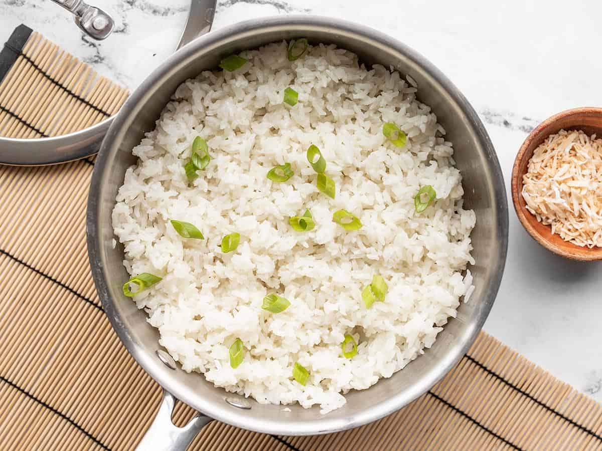

Coconut Rice

Description
An easy and quick side dish whenever you're in a tropical mood or homemade Asian
takeout!
Simply add all to a rice cooker and hit go!
Ingredients
- 1.5 cups long-grain jasmine rice
- 1 ~ 3 clove(s) garlic, minced
- 3/4 t. kosher salt
- 1 13.5 oz. can coconut milk
- 1 c. water
Directions
- Gently rinse the jasmine rice in cold rice until it runs clear. Place the
rice in a bowl and fill with water then leave it to soak for 30 min. Add
the rice (including the starchy water), minced garlic, and salt to the slow
cooker.
- Add the coconut milk. Give the rice a brief stir--gently so you don't
break the rice!)
- Start the rice cooker and cook on low for 15 min.
- Let the rice rest covered for additional 5 min. Then remove the lid and fluff
the rice with a fork. Enjoy!